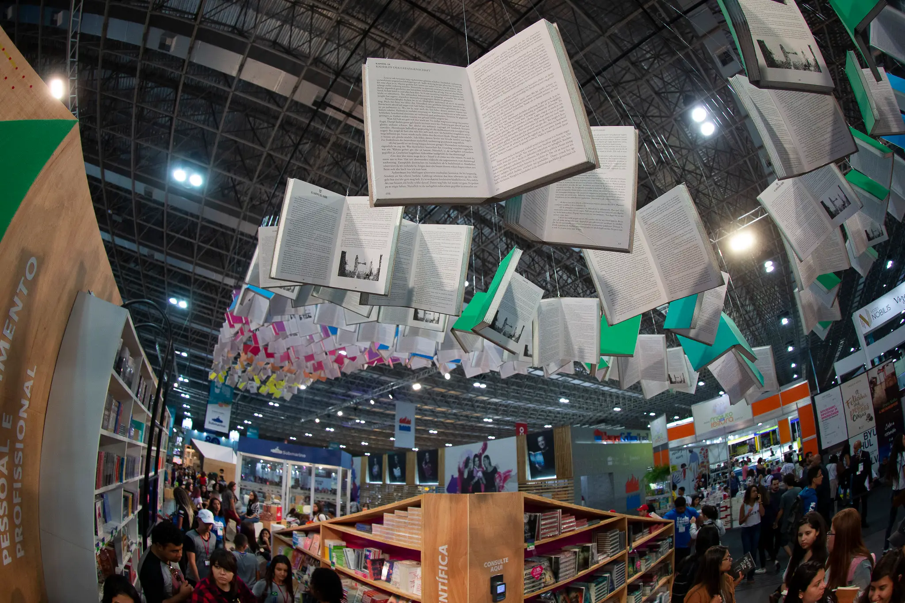
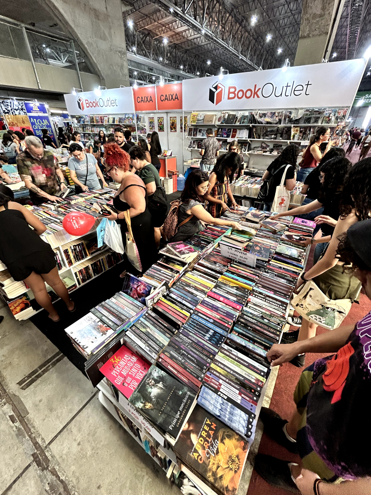

O maior encontro de leitores
Um momento especial para quem ama histórias, descobertas e boas conversas. Nosso encontro de livros reúne leitores para compartilhar opiniões, conhecer novas obras e trocar experiências sobre diferentes gêneros e autores. Venha participar desse encontro, descobrir uma nova história e, quem sabe, encontrar sua próxima leitura favorita e até mesmo trocar livros! O local fica situado em Guarulhos, São Paulo, e o evento será realizado de forma presencial.
Detalhes do evento
Data: 09 de outubro de 2026
Horário: 12h00
Formato: Presencial
Público: Aberto aos participantes interessados.
Programação
09h00 - Abertura
Inicio do evento, abrindo a entrada.
09h30 - Conversa sobre literatura
Uma apresentação sobre a importância da leitura e suas influências na sociedade com palestrantes renomados para quem queira assistir.
09h30 - Momento de interação
Os participantes poderão compartilhar opiniões, indicar seus livros favoritos e conversar com outros leitores, explorar o local e comparecer aos stands.
12h00 - Almoço
Restaurantes no local estarão em funcionamento a partir de 12h00 mas haverá outras opções de alimentação disponíveis durante o dia. É importante avisar que não é permitido a entrada de alimento no evento que não estejam em embalagens fechadas, trazer marmitas ou comidas de fora desse tipo não é permitido.
19h00 - Encerramento
Encerramento do encontro, as atividades no local não serão mais realizadas.
Prévia do evento

Encontro literário
Um espaço para descobrir novas histórias e compartilhar experiências sobre literatura.

Conversas e descobertas
Momentos de interação entre leitores, com conversas sobre livros e autores.

Troca de livros
Uma oportunidade para compartilhar livros e encontrar novas histórias para ler.
Quem estará no evento?
Neymar
Neymar é conhecido por suas obras envolventes com ambientes fictícios e sua habilidade em cativar o público com suas histórias. Estará dando canetas personalizadas no evento.

Cristiano
Cristiano é um autor respeitado, conhecido por suas histórias intrigantes e pela grande quantidade de livros, no total sendo 1000 livros escritos pelo português.
Lionel
Lionel é um autor renomado, conhecido por suas obras mágicas e diferentes desenrolares durante a história, que fazem o leitor imergir em suas histórias. O argentino também estará autografando no evento.
Cafu
Cafu é um convidado especial do evento, conhecido por sua trajetória marcante e por sua história de dedicação e conquistas. Estará participando do encontro e compartilhando experiências com os participantes, além de estar vendendo seu livro, autografando e tirando fotos.